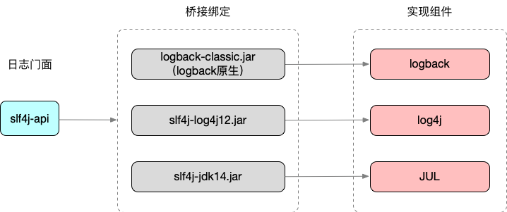
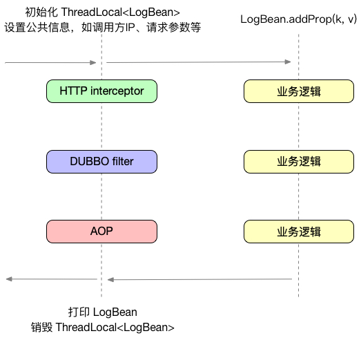
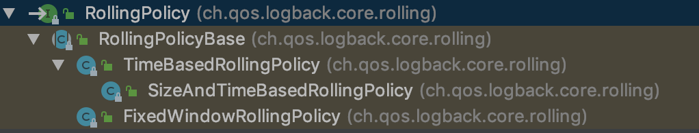

日志对于一个软件系统的重要程度是不言而喻的，线上问题定位、运营数据统计、用户画像分析、系统状态监控等都离不开日志。然而，由于日志通常与业务系统的核心能力没有直接关联，所以经常会被开发人员忽视。对于一些简单的小规模应用程序，也许不需要在日志上花费大量精力。但是对于高复杂度的大型系统来说，日志是保证系统可靠运行必不可少的一环。
日志需要包含什么内容
良好的日志内容应该是记录的信息不多不少刚刚好的。记录信息太少的问题很明显，但是太多也同样会有问题，会导致真正有用的信息被稀释，增加整个日志系统的负担，甚至影响到核心业务的性能。
通常日志中应该包含的信息包含四类：错误信息、调试信息、运行信息、状态信息。不同的应用类型有不一样的信息，以常用dubbo服务为例，日志应该包含dubbo的调用方IP、接口名、方法名、入参、结果、线程、开始时间、消耗时间、其它关键信息等等。对于webapp应用，日志应该包含调用方IP、请求path、参数、返回码、开始时间、消耗时间等等。对于某些非必须的信息，或者不确定是否需要输出的信息，可以结合配置中心做动态控制。如下所示，是一个典型的dubbo请求日志：
前缀
主体
常用日志框架
Java体系中有很多的日志框架，目前常用的包括log4j、log4j2、commons-logging、slf4j、logback、JUL。这些日志框架总体分为两类：一类是日志门面或者称为接口标准，是一种标准API的封装，例如commons-logging和slf4j，另一类是剩下的日志实现框架。
在早期比较流行的日志门面是Apache的commons-logging，它通过动态查找机制，在程序运行时，使用自己的ClassLoader寻找和载入本地具体的实现。目前使用最广泛的日志门面是slf4j，slf4j在编译期间，静态绑定本地的LOG库使得通用性要比commons-logging要好，它的实现机制决定了slf4j限制较少，使用范围更广。
在日志实现框架中，log4j是最老牌的，也是早期使用最多的。log4j2的log4j的升级版，但是与log4j不兼容。logback是由log4j的作者后来另外出品的（slf4j也是他写的），JUL是jdk官方推出的日志实现。
在各种组合中，常用的组合有：slf4j+logback，slf4j+log4j，commons-logging+log4j。对于新项目，建议使用slf4j+logback组合。

日志单元和日志链路
在实际业务中如何有效的管理和使用日志？日志单元+日志链路
日志单元
什么是日志最小单元？对于业务日志，我们可以把业务进程分为三类：webapp、RPC(dubbo)、javaapp。webapp和rpc服务都有非常明确的输入输出，可以以一个请求作为日志的最小单元，一个请求内的所有信息汇总到一条日志内。对于其他javaapp进程，也同样可以找出一个日志最小单元，例如mq消费者中的每一次消费可以做为一个最小单元。
被汇总的最小单元日志相比平铺式的日志有很多好处。如在需要定位问题时，日志单元可以有足够的汇总信息，而普通的平铺式日志中，你需要去查询非常多的日志，每条日志都只包含了很小一部分的信息，甚至很多时候你都不知道哪条日志是属于哪个请求的，定位问题会非常困难。在同步输出的情况下日志单元可以减少了落盘次数，减小磁盘IO。日志单元有统一的生命周期管理，可以规范代码中的日志使用。实现方式如下：

代码实现
以webapp为例，首先定义好日志单元LogBean：
|
|
然后通过interceptor进行日志管理：
由interceptor统一管理日志单元以后（dubbo可以由filter管理，其它类型可以由aop切面管理），在业务中不再需要关心请求的其它信息，只需要往日志中添加自己需要内容即可。
上面在LogBean中我们可以看到Logger的名称不是类名，而是一个字符串“static”，这是为了将统一管理的日志单元单独输出到独立的日志文件中，便于后续的日志收集。只需要在logback的配置文件中单独为static配置一个appender就可以了：
日志链路
有了日志单元，我们可以看到一个请求内的所有信息，但是在分布式系统中，光靠一个请求的信息有时候还不能定位出问题所在，所以我们需要有日志链路。把一次调用中的所有日志按先后顺序汇总在一起组成日志链路。要完成这个任务，光靠日志框架本身是做不到的，我们需要引入链路追踪组件。如常见的zipkin、pinpoint和网易云提供的NAPM。只需要把追踪的traceid和spanid信息输出到日志单元即可。
异常日志
除了正常的业务日志以外，通常进程中还会存在一些不可预见的异常日志，例如由于Exception导致的异常日志，通常会包含完整的堆栈信息，这种堆栈信息不适合直接放入日志单元，通常做法应该是把简要的异常描述放入日志单元，日志堆栈则直接通过ERROR级别日志输出。后续可以通过哨兵对ERROR日志进行监控报警。
其它问题
日志单元中有可能出现异步逻辑的情况，由于LogBean是基于ThreadLocal实现的，因此在异步逻辑中需要注意不能直接使用LogBean来添加日志信息，而应该通过原子类或其它中间变量来实现，虽然InheritableThreadLocal是可以继承的，但是实际业务中的异步逻辑通常会是线程池的实现，所以依然不能直接使用。
日志输出方式
同步异步
对于logback的日志实现，输出方式主要分为两种，同步和异步。
同步方式会在每次调用logger方法时直接写入磁盘并返回，因此它是会阻塞业务线程的，如果磁盘IO跟不上，就会导致业务逻辑被卡住，影响性能。好处是日志会及时输出，不会出现丢失情况。
异步方式在每次调用logger方法时不会落盘，只是把日志放到了一个内存队列中，会由另一个异步线程来负责把内存中的日志数据落盘，当队列超出限制时，会按规则丢弃低级别的日志。好处是异步的方式对业务的性能影响更小。异步配置：
动态变更
logback支持定时reload配置文件并按照新的规则进行输出，通过这种方式可以临时修改日志输出级别和内容，日志文件等等。
除了logback本身的配置可以reload以外，我们还可以结合配置中心来动态修改日志输出内容，例如可以在配置中心配置是否输出result，或根据param的长度决定是否要输出所有param到日志中等等。
日志滚动
logback主要提供了两种日志文件的滚动方式：FixedWindowRollingPolicy和SizeAndTimeBasedRollingPolicy。

简单的解释，FixedWindowRollingPolicy就是按照文件名加索引的方式滚动，日志文件将会是yeaf.log、yeaf.log.1、yeaf.log.2这样的，SizeAndTimeBasedRollingPolicy是按照时间加索引进行滚动。日志文件将会是yeaf.log、yeaf.log.2019-05-15_0这样的。用哪种方式可以根据需求决定，这里推荐使用SizeAndTimeBasedRollingPolicy，不管用哪种一定要注意配置日志文件的存储限制，以免把机器磁盘跑满导致异常。
|
|
使用
日志输出到磁盘以后，改怎么使用它们呢？在分布式系统中，日志文件分散在成千上万的主机中，我们不可能为了一条日志，去登陆所有机器一台一台的查。因此日志输出以后需要进行收集汇总。
通常我们使用logstash之类的工具来做收集，用elk和HDFS来做存储。
收集日志时，应该把不同类型的日志分开收集，如dubbo服务的日志收集到一起，webapp的日志收集到一起，mq消费者的日志收集到一起，这样做的好处是日志导入elk后，可以为每种类型的日志建立不同的索引，可以提高搜索效率。
线上问题定位是可以通过elk快出查出调用的日志链路，也可以通过业务日志来做一些业务系统的监控，如每分钟登陆的人数，登陆用户的地理位置分布，每分钟的消息数，消息的地理位置分布，等。
还可以通过对HDFS中的日志进行数据挖掘分析，得出一些有价值的结果。